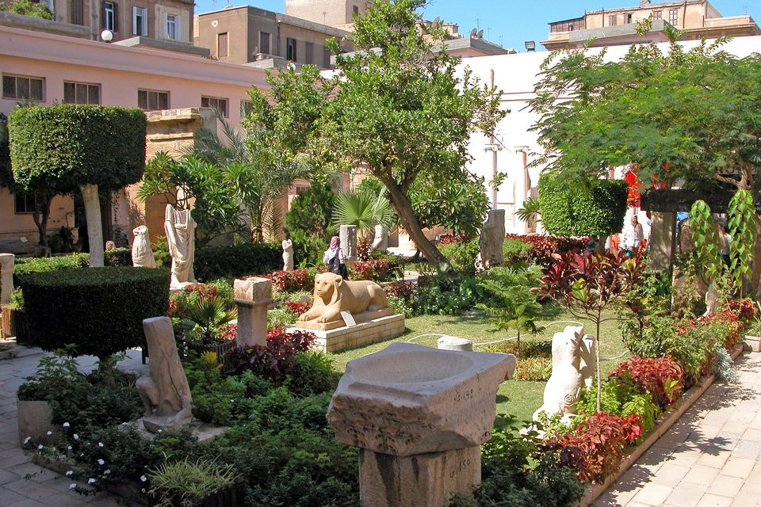

Egypt · Alexandria
Graeco-Roman Museum, Alexandria audio guide
8 stops · 12 min
Billed in ZAR
Unlocks in this browser after payment.
Alexander, the Ptolemies and Rome, in their own city. Listen here, or get the Earwise app to play as you walk.
Stops
- 1
A museum called Mouseion
In front of the museum's neoclassical front, facing the columns and the Greek word above them. This is stop 1 on the route.
Play0:00 / –:––Read along
Above the columns, one Greek word is carved: Mouseion. It means the place of the Muses.
The word recalls the famous Mouseion of ancient Alexandria. It stood nearby, a gathering place for scholars who hoped the Muses would inspire them.
This museum began with one man. In 1889, the Italian scholar Giuseppe Botti set out to protect the city's antiquities from loss and destruction.
The museum was founded in 1892. The Ministry says Khedive Abbas Helmy the Second inaugurated it. It started in a modest rented house. Botti was its first director.
The finds kept coming, and the house was soon too small. Nubar Pasha set the first stone of this building in 1894. The architects were Dietrich and Stenon. Work took about a year, and the museum opened here in 1895.
The Ministry of Antiquities calls it the first building in Egypt designed for the purpose of a museum. It is the only museum in the country fully dedicated to Egypt under Greek and Roman rule.
Since 1953, Egyptian archaeologists have run it.
In 2005, the museum closed for a long renewal. The work kept the classical front. It stabilised the structure and added climate control. The building was also enlarged.
The museum reopened in October 2023, after about eighteen years. Its story runs through more than twenty-five galleries, from the Greeks to the year 641 AD.
- 2
Alexander and his city
In the first gallery, Egypt and Greece, among the portraits of Alexander the Great. This is stop 2 on the route.
Script and audio included when you buy - 3
A queen in a ship's prow
In the gallery of Ptolemaic rule, beside the mosaic of a woman wearing a ship's prow as a headdress. This is stop 3 on the route.
Script and audio included when you buy - 4
Sarapis, the Apis bull and a god for two peoples
In the gallery of religious life, beside the black basalt statue of the Apis bull. This is stop 4 on the route.
Script and audio included when you buy - 5
The queen from the sea
In the gallery called The Queen, before the colossal pink granite statue of a Ptolemaic queen as Isis. This is stop 5 on the route.
Script and audio included when you buy - 6
Clay ladies and a Roman house
In the galleries of daily life, among the Tanagra figurines and the reconstructed Roman house. This is stop 6 on the route.
Script and audio included when you buy - 7
Rome takes Egypt
In the gallery of Roman rule, among the portrait heads of emperors. This is stop 7 on the route.
Script and audio included when you buy - 8
The afterlife, Saint Menas and Coptic art
In the galleries of the afterlife, the Byzantine period and Coptic art. This is stop 8 on the route.
Script and audio included when you buy
On the map
All 8 stop pins for this guide are marked. Open map